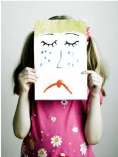

HOMEOPATHIC REMEDIES that help with GENERALIZED ANXIETY DISORDER
It’s completely okay to feel anxious every now and then, especially if your life is stressful. However, excessive, ongoing anxiety and worry that interfere with day-to-day activities may be a sign of generalized anxiety disorder.
Generalized anxiety disorder can be developed as a child or during adulthood. The symptoms are similar to panic disorder, obsessive-compulsive disorder and other types of anxiety, but they’re all very different conditions.
Living with generalized anxiety disorder can be a long-term challenge. In many cases, it occurs along with other anxiety or mood disorders. In most cases, generalized anxiety disorder improves with medications or talk therapy (psychotherapy). Other things like making lifestyle changes, learning coping skills and using relaxation techniques can help as well.
Causes – As with many other mental health conditions, the exact cause of generalized anxiety disorder isn’t fully understood, but it may include genetics as well as other risk factors.
Symptoms – Generalized anxiety disorder symptoms can vary. They may include:
· Persistent worrying or obsession about small or large concerns that’s out of proportion to the impact of the event
· Inability to set aside or let go of a worry
· Inability to relax, restlessness, and feeling keyed up or on edge
· Difficulty concentrating, or the feeling that your mind “goes blank”
· Worrying about excessively worrying
· Distress about making decisions for fear of making the wrong decision
· Carrying every option in a situation all the way out to its possible negative conclusion
· Difficulty handling uncertainty or indecisiveness
· Fatigue
· Irritability
· Muscle tension or muscle aches
· Trembling, feeling twitchy
· Being easily startled
· Trouble sleeping
· Sweating
There may be times when your worries don’t completely consume you, but you still feel anxious even when there’s no apparent reason. For example, you may feel intense worry about your safety or that of your loved ones, or you may have a general sense that something bad is about to happen.
Your anxiety, worry or physical symptoms cause you significant distress in social, work or other areas of your life. Worries can shift from one concern to another and can change with time and age.
Symptoms in children and teenagers
In addition to the symptoms above, children and teenagers who have generalized anxiety disorder may have excessive worries about:
· Performance at school or sporting events
· Being on time (punctuality)
· Earthquakes, nuclear war or other catastrophic events
A child or teen with generalized anxiety disorder may also:
· Feel overly anxious to fit in
· Be a perfectionist
· Redo tasks because they aren’t perfect the first time
· Spend excessive time doing homework
· Lack confidence
· Strive for approval
· Require a lot of reassurance about performance
Risk factors – These factors may increase the risk of developing generalized anxiety disorder:
· Personality à A person whose temperament is timid or negative or who avoids anything dangerous may be more prone to generalized anxiety disorder than others are.
· Genetics à Generalized anxiety disorder may run in families.
· Being female à Women are diagnosed with generalized anxiety disorder somewhat more often than men are.
Complications - Having generalized anxiety disorder does more than just make you worry. It can:
· Impair your ability to perform tasks quickly and efficiently because you have trouble concentrating
· Take your time and focus from other activities
· Sap your energy
· Disturb your sleep
Generalized anxiety disorder can also lead to or worsen other mental and physical health conditions, such as:
· Depression (which often occurs with generalized anxiety disorder)
·
Substance abuse
· Trouble sleeping (insomnia)
· Digestive or bowel problems
· Headaches
· Heart-health issues
HOMOEOPATHIC REMEDIES
ACONITUM NAPELLUS 30 – Aconite is one of the top homeopathic remedies for anxiety as it covers the acuteness of anxiety attacks. The key symptoms of aconite to be used as a homeopathic remedy for anxiety is the ‘suddenness of symptoms’. Anxiety or distress will come very suddenly and without any premonition and can come at any time. Feeling of impending doom and also fear of death is there. Anxiety attacks happen out of nowhere at any time and there might not be any perceptible trigger or a reason for it to occur.
ARGENTUM NITRICUM 200 - Argentum nitricum is an excellent remedy for anxiety, especially chronic type. It is for anxiety with dizziness. It is more suited to people who suffer from Generalized Anxiety Disorder. The main symptoms are – there is constant sense of anxiety – here it differs from Aconite as it is used more when the attacks of anxiety are sudden in nature and are violent. In Argentum patient the anxiety is not violent but is constant. The patient is more of a “worrier type” and this is what leads to a state of constant anxiety. The patient that requires Argentum lives in a world full of fear, irrational impulses and a forsaken feeling. They are always in a state of worry. They anticipate all kinds of worrisome things. They suffer from a severe anticipatory anxiety – the thought of meeting a new person gives palpitations, trembling, a cramping pain in the abdomen and at times a strong urge to pass stool. Argentum patients suffer from all kinds of phobias claustrophobia, acrophobia etc. They usually avoid crowded places, parties, narrow streets and alleys; fear of height is very strongly marked and looking down even from the second floor sends shivers down the spine.
ANACARDIUM ORIENTALE 200 – Anxiety. Fear of examination. Fear of being pursued and prosecuted. Stage fright in musicians. Ancardium patients think that they are possessed of two persons or wills. They are very easily offended. Lack of confidence in himself and others. They have digestive problems.
ARSENICUM ALBUM 200 - Arsenic alb is best for anxiety, anxiousness and mental restlessness. Arsenic alb patients always moving from place to another, physically too weak to move, so he wants to be moved from place to place. Marked feature of Arsenic alb is fear of death, fears that he has some sort of an incurable disease. They are always sad and hopeless of recovery. Fear and in anxiety when alone, and fear they will die soon. They have suicidal tendencies and are often weary of life. Impulse to commit suicide, over sensitiveness to circumstances and surrounding. Arsenic alb patient is extremely fastidious, wants everything in proper place even when he or she is sick.
CALCAREA CARB 200 - Calcarea carb is also useful for anxiety. The patient thinks that they have done something wrong. They feel uneasy and anxious with palpitations, and often fear loss of reason. Calcarea carb patients are desperate for life and they fear insanity. They usually also bore others by repeatedly describing their ailments.
GELSEMIUM 200 – Anxiety due to fright, fear, emotions, exciting news or a forthcoming examination or interview. Also gets stage fright. Diarrhea can occur from emotional excitement, fright, bad news. This medication helps with anxiety chills and hot flushes, too.
IGNATIA AMARA 200 - Ignatia is prescribed when anxiety occurs due to any grief. The patient has a changeable mood. They are introspective, silently brooding, melancholic, sad and tearful, sighing and sobbing.
LYCOPODIUM CLAVATUM 200 - Anxiety with lack of confidence. The patient is unable to sleep due to the happenings during the day and experience anxiety about forthcoming events. Lycopodium patients prefer warm food and drinks, and have a craving for sweets.
NATRUM MURIATICUM 200 - The Natrum mur patient is anxious about everything, and even has anxious dreams. Anxiety with chest pain.
PHOSPHORUS 200 - Very restless patients who are sensitive. They need security and constant reassurance. Anxious, restless and nervous due to the fear of darkness, thunder, alone or dying.
PULSATILLA NIG. 200 - Pulsatilla is prescribed when anxiety occurs after bad news or an emotional upset. The patient is weepy, touchy and needs company.
SULPHUR 200 - Sulphur is one of the best remedies for anxiety disorder. There is anxiety with fainting spells, profuse sweating, which gets worse in morning. Sulphur persons are mentally lazy, always tired, occasionally restlessness and hasty. They are irritable, impatient of others, selfish, easily excited and offended. They are always in dreams, delusions. They are ragged philosopher, very unclean, do not care for neatness, and think there is no need of cleanliness. Sulphur patients are suspicious and mentally depressed, very forgetful, confused, absent minded, having aversion to mental, as well as physical efforts and aversion to bathing.
SEPIA 200 – Sepia patients feel anxious towards the evening and dread to be alone. They are indifferent to those loved best. A feeling of bearing down in pelvis.
SYPHILINUM 200 — Syphilinum is great for anxiety. An important feature of Syphilinum patients is that they repeatedly wash their hands and they feel compelled to do so in order to relieve their anxiety. They have a marked fear of night time, and they dread the approach of night. There is intense anxiety and a constant feeling that they may go insane.
THUJA OCCIDENTALIS 200 - Thuja is a very good remedy for generalized anxiety disorders and obsessive compulsive neurosis. The patient generally gets anxious over trifles and cannot concentrate on whatever they do. They have many fixed ideas and find it difficult to get rid of them. Social phobia is also commonly seen in these patients who begin to get nervous and begin twitching when approached by strangers. This is overall a very good drug for controlling anxiety states.